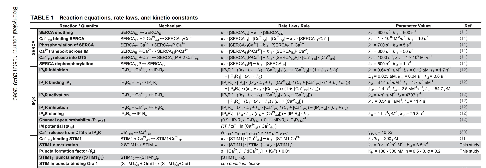
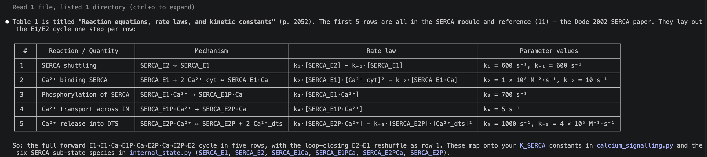
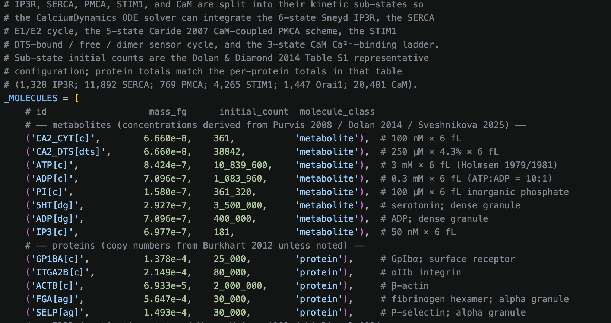
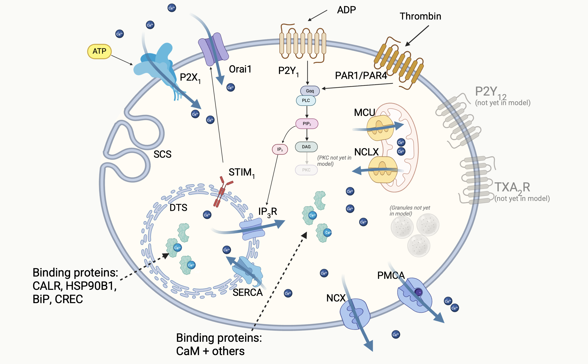
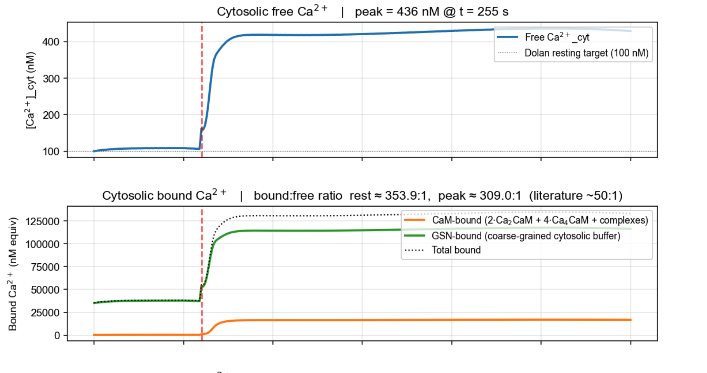
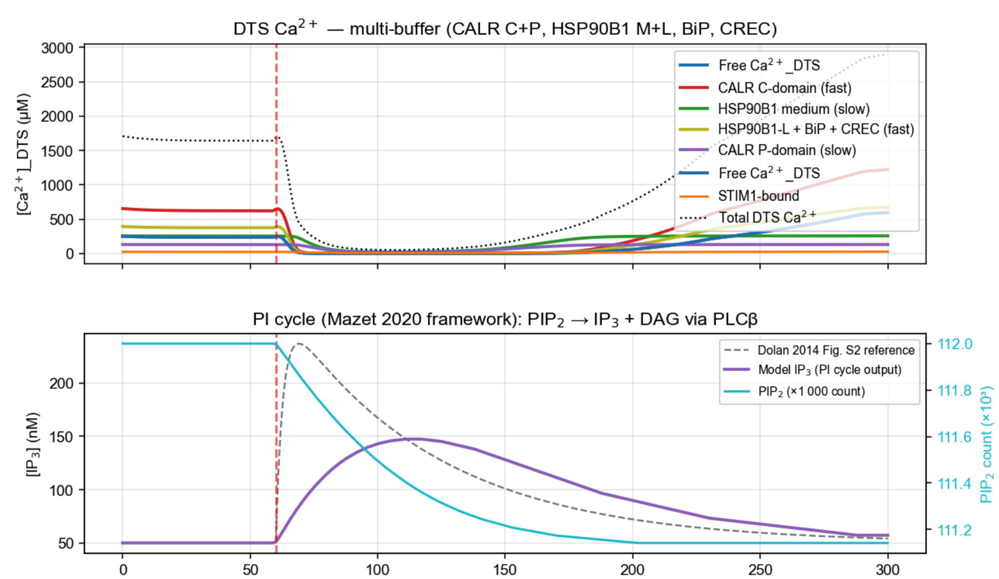

21 May 2026
What I evaluated
What I did
For each mechanism, a five-step process:
Then: does the resting state hold? Do the timescales line up? Do the unit tests still pass?
Start with the published data (usually PDF, sometimes CSV).

Just a small excerpt.
Ask AI to extract — get it to tell you what it’s doing to sanity check (but it is very good at this).
E.g. I asked: “Please read Dolan and Diamond 2014 and tell me what the first 5 lines of table 1 show.”
Simply not feasible to do this by hand at large scale; AI could process 100s of papers in a day. The only challenge is verification, but this is also amenable to AI assistance.

Then get AI to build the code, using the wcEcoli code as a template.
The code works well, the architecture is not perfect — needs some work to make it more usable for future expansion — but it’s an excellent start.


The Purvis 2008 k₃ story.
Criteria
Compared output to existing models. Success criteria:
Model state at 14 May


Near-term biology
Wider impact
Blue sky goal
Dash lab meeting · 21 May 2026